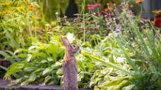
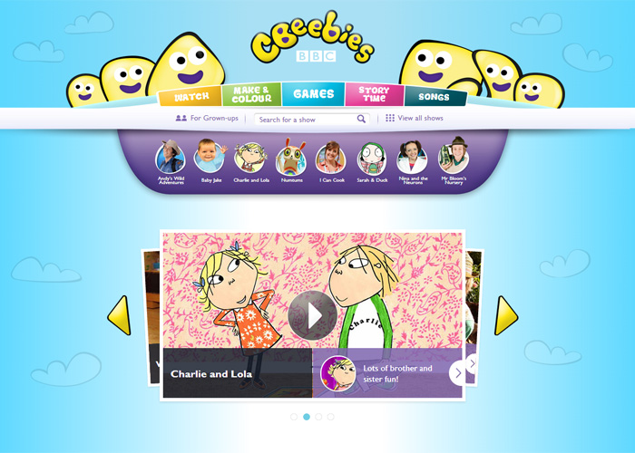
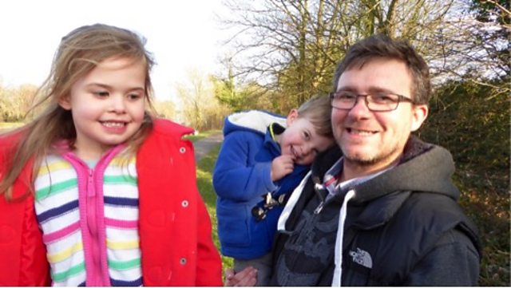

BBC Blogs
Cbeebies Grwon-ups
BBC Blog
HomePage
Accessibility links
- Skip to content
- Accessibility Help
Notification
- Home
- News
- Sport
- Weather
- Iplay
- Sounds
- Bitesize
- Cbeebies
- CBBC
- Food
- HOME
- News
- Sport
- Weather
- Iplay
- Sounds
- Bitesize
Cbeebies Grwon-ups
- Cbeebies
- CBBC
- Food
- HOME
- News
- Sport
- Business
- Innovation
- Culture
- Travel
- Earth
- Video
- Live
- Close Menu
This page was archived on 24th September 2024 and is no longer Updated.
Find out more
Cbeebies Grwon-ups
CBeebies Grown-ups
Featured Post
Bernard Cribbins: Storytelling for children
Wednesday 05 November 2014, 11:30
Cbeebies Grwon-ups
We all love hearing a good story – but what makes a great story to read aloud to your child,
and how can you make sure that your little one is riveted to your tale? We talked to master
storyteller Bernard Cribbins about the importance of telling stories to children.
Find out more
2 of 15
BBC blogs- CBeebies Grwon-ups
https://www.bbc.co.uk/webarchive/https%3A%2F%2F
See all post
Comment
Posts
-
Marketing Remembrance Week on CBeebies and BBC
Monday 06 November 2017, 10:11
Sally
Producer

CBBC and CBeebies Controllers Cheryl Taylor and Kay Benbow have commissioned a
dialogue-free, two minute animated film called ‘Poppies’, as a BBC Children’s tribute of
Remembrance.
During the week of Remembrance 2017, you will be able to
watch
the full video on the CBeebies website here. It is also available on
BBC iPlayer until 19 November
.
3 of 15
BBC blogs- CBeebies Grwon-ups
https://www.bbc.co.uk/webarchive/https%3A%2F%2F
Why?
Such a tribute was a ‘first’ for BBC Children’s. Given our young audience, war is
something of a difficult area. However, it was a viewer’s letter to our Scheduling
department that really got us talking about the possibility of marking this special day.
We felt that the time was right to actively involve our viewers in the act of
Remembrance..
How?
‘Poppies’ is a beautiful, atmospheric and ethereal piece which sees war as experienced
by the animal inhabitants of a WW1 battlefield. Conflict is implied in changes of tone
in music, colour and emotion - as we transition from peace to war and return once
more to peacetime. The ending is both…
Read more
Who's who in this year's CBeebies Christmas Show -The Snow
Queen.
Friday 20 October 2017, 09:55
Sally
Producer

Ticket requests across all three showings of this year’s show at Curve theatre in
Leicester.
Last year 257,211 people applied for tickets to the panto but The Snow Queen beat this
f
igure on the opening day, with a record breaking 262,000 people applying for tickets.
Kay Benbow, Controller of CBeebies said “We are thrilled by the year-on year increase
in ticket applications and are absolutely amazed by this year's huge number. It really
shows the popularity of the CBeebies Christmas show and just how much it means to
our youngest audience and their families.”
Dr Ranj Singh, who joins the production this year to play Kai, added: “I’m absolutely
blown away by how many people have applied to come to the CBeebies Christmas
Show this year. It just goes to show how amazing our audience are, and how much the
shows mean to them. I can’t wait to…
Read More>
•
Alexa and her family- Our Family CBeebies
Friday 28 April 2017, 15:23
Leslie, CBeebies Grown-ups
Alexa is 4. She lives with her dad James, and little brother Archie. Her mum Rebecca
died in 2014, she had cancer. Here, James talks about his family.

Can you tell us about Alexa’s Mum?
That day in December 2014 was the hardest day of my life. I knew it was coming, but it
11/6/25, 11:14 PM
BBC Blogs - CBeebies Grown-ups
https://www.bbc.co.uk/webarchive/https%3A%2F%2F...
was still a shock when my wife, Becca, died. She had been diagnosed with cancer in
April 2014; and the horrible disease took her life that same year.
It was a very difficult time for the whole family, Becca's parents didn't expect to bury
their 34 year old daughter, nor me my wife and the children their mother. But between
us all we managed to find a way through it.
I am very fortunate to have received amazing support from the children's
grandparents, who were great throughout Becca's illness, and continue to support me
& the kids today. I started to see a counsellor in the run up to Becca's terminal
diagnosis after talking to a friend
What advice would you give to families in a similar situation?
I have ...
Read more
•
"Time for Teletubbies!" David Walliams and Rochelle Humes join
the show.
Sunday 20 November 2016, 16:43
Kate
Leslie, CBeebies Grown-ups
6 of 15
BBC blogs- CBeebies Grwon-ups
https://www.bbc.co.uk/webarchive/https%3A%2F%2F
Strictly Come Dancing star and BBC Sport presenter Ore Oduba took off his dancing
shoes to chat to us about reading the bedtime story on CBeebies, and how he chose
which of his childhood favourites to read...
Hello! Can you tell us a bit about yourself?
Hi, Im Ore. Im a huge sports fan and Im really lucky to do a job that I love. I’m a
sports TV presenter at the BBC and work on lots of…
Read more
•
2016 Christmas Show: CBeebies The Nutcracker
Tuesday 04 October 2016, 12:53
7 of 15
BBC blogs- CBeebies Grwon-ups
https://www.bbc.co.uk/webarchive/https%3A%2F%2F
Planned Scheduling
Assigned to: Peggy
Weekly plan from A-Z
| Monday |
Tuesday |
Wednesday |
Thursday |
| From house A-C |
From house F-K |
From house J-H |
From House M-Z |